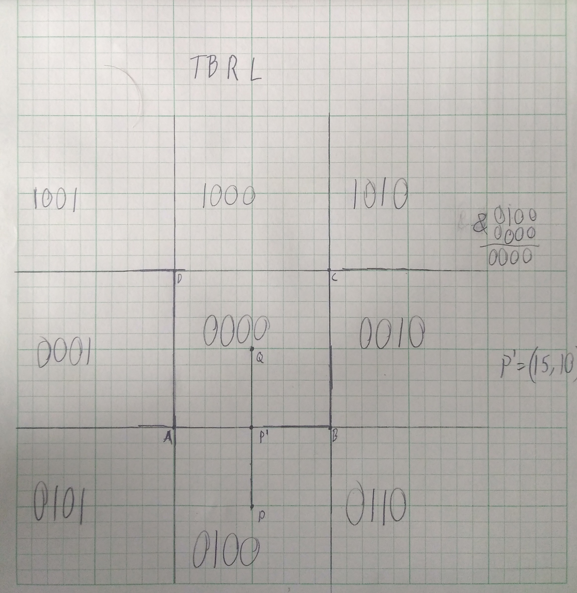

1. if det(A) != 0 then a is invertible as it’s linearly independent.
For 2*2 invertible matrix A^-1 = 1/ad—bc* [d -b | -c a] (using | as a line split)
2. for every two points take the area of the triangle formed by them and the point you want to check.
If the area of all triangles have the same sign the orientation is the same and the point is inside.
For a polygon you draw a rightward line from the point if it intersects with polygon lines an even
number of times it’s outside, else it’s inside.
3. area2 finds the area of a rectangle using AC’s length and BC’s height then subtracts the area of
the rectangle using BC’s length and AC’s height. Three applications are finding the area of a triangle
and by extension any polygon, finding if a point is inside a triangle, and determining the orientation
of a triangle.
4. 